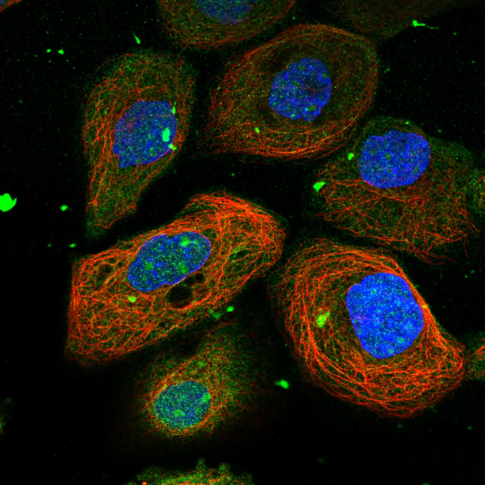

type: protein-evaluation gene: "OARD1" date: 2026-06-01 tags: [protein-scout, nucleolus, evaluation] status: scored ---
OARD1 核蛋白评估报告
1. 基本信息
| 项目 | 内容 |
|---|---|
| 基因名 / 别名 | OARD1 / C6orf130, TARG1 |
| 蛋白全名 | ADP-ribose glycohydrolase OARD1 |
| 蛋白大小 | 152 aa / 17.0 kDa |
| UniProt ID | Q9Y530 |
2. 评分总览
| 维度 | 得分 | 新权重 | 加权后 | 关键证据摘要 |
|---|---|---|---|---|
| 核定位特异性 | 9/10 | ×4 | 36.0 | UniProt Nucleoplasm+Nucleolus+Chromosome (ECO:0000269)；GO-CC nucleolus IDA, nucleoplasm IDA, site of DNA damage IDA；HPA Supported, Nucleoplasm+Nucleoli, IF 原图可获取 |
| 蛋白大小 | 10/10 | ×1 | 10.0 | 152 aa, 17.0 kDa，小型 ADP-ribose 水解酶 |
| 研究新颖性 | 10/10 | ×5 | 50.0 | PubMed strict=4, broad=16 |
| 三维结构 | 9/10 | ×3 | 27.0 | AlphaFold pLDDT 93.5 (pct>90: 90.8%)；PDB 6 个结构 (NMR+X-ray, 最高 1.25A) |
| 调控结构域 | 5/10 | ×2 | 10.0 | Macro domain (IPR002589, PF01661)，ADP-ribose 结合/水解，与 DNA damage response 相关 |
| PPI 网络 | 2/10 | ×3 | 6.0 | STRING 不可用 (502)；IntAct 以 Y2H/Co-IP 为主；UniProt 无记录互作 |
| 加权总分 | 139/180** | |||
| 互证加分 | +0.0 | |||
| 归一化总分 (÷1.83) | 76.0/100** |
3. 详细分析
3.1 核定位证据
| 来源 | 定位 | 可信度 |
|---|---|---|
| UniProt | Nucleus, nucleoplasm (ECO:0000269 ×2)；Nucleus, nucleolus (ECO:0000269)；Chromosome (ECO:0000269) | 高 (实验证据) |
| GO-CC | nucleolus (IDA:UniProtKB), nucleoplasm (IDA:UniProtKB), site of DNA damage (IDA:UniProtKB) | 高 |
| Protein Atlas (IF) | HPA Supported, Nucleoplasm + Nucleoli (main), IF 原图可获取 | 高 (IF 确认) |
HPA IF 状态: IF 图像已获取。HPA 报道 Nucleoplasm + Nucleoli 双重定位，reliability=Supported，共 6 张 IF 原图（细胞系 A-431, U-251 MG, U-2 OS）。

结论: OARD1 具有极强且多源的核定位证据（UniProt 实验注释 + GO-CC IDA + HPA IF），是明确的核仁/核质蛋白，且与染色体/DNA 损伤位点关联。
3.2 结构与数据源
| 指标 | 数值 |
|---|---|
| AlphaFold | AF-Q9Y530-F1 |
| 平均 pLDDT | 93.5 |
| pLDDT >90 | 90.8% |
| pLDDT 70-90 | 1.3% |
| pLDDT <50 | 5.3% |
| PDB | 6 个 (2EEE/NMR, 2L8R/NMR, 2LGR/NMR, 4J5Q/X-ray 1.35A, 4J5R/X-ray 1.25A, 4J5S/X-ray 1.55A) |
| InterPro | IPR050892, IPR002589 (Macro domain), IPR043472 |
| Pfam | PF01661 (Macro domain) |
AlphaFold PAE 状态: PAE 已下载。pLDDT 极高 (93.5, 90.8% >90)，结构预测极为可靠。PDB 已有 6 个实验结构验证，包括高分辨率 X-ray (最高 1.25A) 和 NMR。
3.3 研究现状
| 指标 | 数值 |
|---|---|
| PubMed strict (Title/Abstract) | 4 |
| PubMed broad | 16 |
| 别名 | C6orf130, TARG1（未用于 scoring） |
关键文献：OARD1 作为 ADP-ribose glycohydrolase，在 DNA damage response 中通过去除蛋白谷氨酸上的 mono-ADP-ribose 发挥功能（PMID:23474714, 23481255）。文献量极低（strict=4），属于高度新颖靶标。
3.4 PPI 网络（三源综合）
| Partner | Source | Score/Evidence | Relevance |
|---|---|---|---|
| TNKS | IntAct | validated two hybrid (PMID:32296183) | PARP/Tankyrase, ADP-ribosylation |
| PICK1 | IntAct | two hybrid array | Scaffold protein |
| YWHAH | IntAct | anti tag co-IP (PMID:26496610) | 14-3-3 signaling |
| MYH9 | IntAct | anti tag co-IP | Cytoskeleton |
| TIMM13 | IntAct | anti tag co-IP | Mitochondrial import |
| — | STRING | 不可用 (502 Bad Gateway) | — |
| — | UniProt | 无记录互作 | — |
STRING 数据无法获取 (502)，IntAct 互作以 Y2H/Co-IP 为主但缺乏高置信度重复验证。PPI 对核定位和调控功能支持较弱。UniProt 无记录互作。
4. 总体评价
OARD1 是一个文献量极低（strict=4）、结构验证极其充分（pLDDT 93.5 + 6 PDB 实验结构）的小型核仁/核质蛋白。核心优势在于核定位证据多源且高置信度（UniProt 实验注释 + GO-CC IDA + HPA IF），蛋白极小（17 kDa）便于实验操作，ADP-ribose glycohydrolase 功能与 DNA damage/chromatin 直接相关。主要不足是 PPI 数据薄弱（STRING 不可用，IntAct 互作缺乏深度验证），影响对核内功能网络的置信度。综合评分在 nucleolus 类别中具有竞争力。
5. 数据来源
- UniProt: https://www.uniprot.org/uniprotkb/Q9Y530
- AlphaFold: https://alphafold.ebi.ac.uk/entry/Q9Y530
- PubMed: https://pubmed.ncbi.nlm.nih.gov/?term=OARD1
- Protein Atlas: https://www.proteinatlas.org/ENSG00000124596-OARD1
HPA IF 状态: HPA IF 图像已本地嵌入。

PAE 图像说明: AlphaFold PAE 图像已重新获取并嵌入（见下方 PAE 图像修正块）；结构判断仍结合 pLDDT 与 PAE 综合判断。
<!-- AF_PAE_REPAIR_START --> PAE 图像修正（2026-06-05）: AlphaFold 提供 predicted aligned error 图像；此前“PAE 图像暂无数据”的表述为未获取/未嵌入导致。

<!-- DOMAIN_HUMANPPI_REPAIR_START -->
Domain/SMART 与 humanPPI 补充（2026-06-06）
SMART / UniProt domain
| Source | Data | |
|---|---|---|
| UniProt | Q9Y530 | |
| SMART | SM00506; | |
| UniProt Domain [FT] | DOMAIN 2..152; /note="Macro"; /evidence="ECO:0000255\ | PROSITE-ProRule:PRU00490" |
| InterPro | IPR050892;IPR002589;IPR043472; | |
| Pfam | PF01661; |
humanPPI / HPA Interaction
Source: https://www.proteinatlas.org/ENSG00000124596-OARD1/interaction
| Partner | Datasets | AF3/HPA structure |
|---|---|---|
| PARP1 | Intact | false |
| PICK1 | Intact | false |
| TNKS | Intact | false |
<!-- DOMAIN_HUMANPPI_REPAIR_END -->